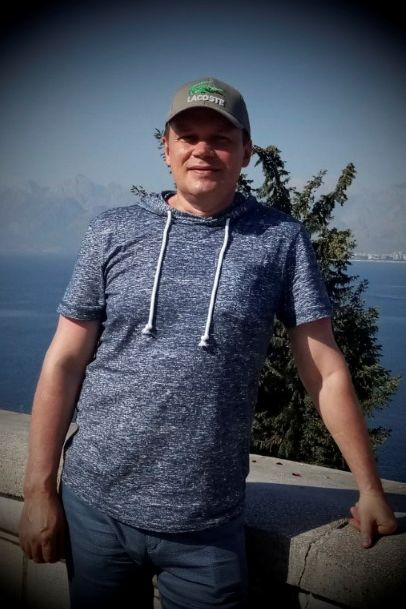
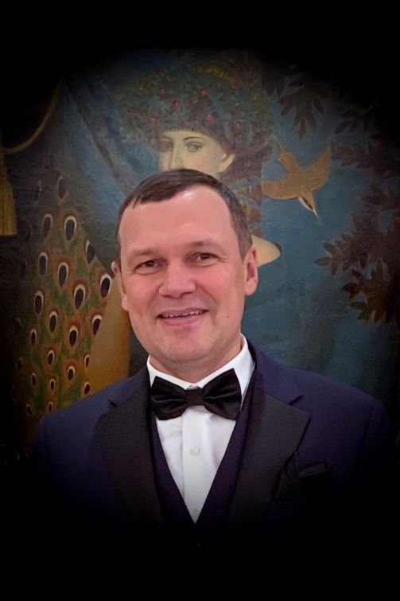
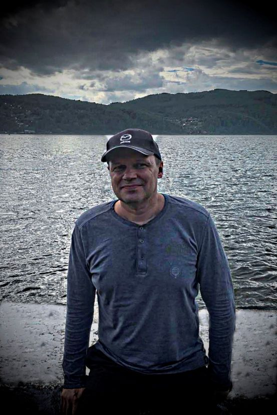
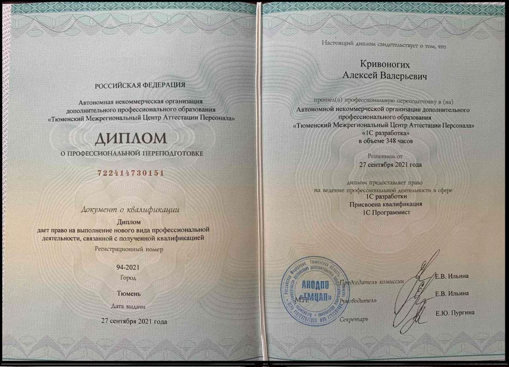

Отличник, участник олимпиад, чемпион школы по физике,
член физико-математического кружка при МГУ.
Спортсмен, участник соревнований, победитель многоборья
среди учащихся 3 курса.
Высшее IT образование:
Факультет технической кибернетики
Тюменский индустриальный университет.

Профпереподготовка, 1С Программист

3. GeekBrains University
Факультет: Web-РазработкаСпециальность: самостоятельное изучение
4. Сертификаты с отличием по Python


Повышение квалификации
1. Институт бизнес-технологий «Атлант-М»
Факультет: «Менеджмент», окончил с "золотым" сертификатом

2. Институт Тренинга
Тема: Решение конфликтных ситуаций

3. Институт Тренинга
Тема: Эффективное обслуживание

4. Volkswagen Group Rus Academy
Тема: Экономика и ключевые процессы сервиса

5. Volkswagen Group Rus Academy
Тема: Эффективное управление сервисной станцией
6. Volkswagen Group Rus Academy
Тема: Юридические аспекты работы сервиса
7. Volkswagen Group Rus Academy
Тема: Сервисный маркетинг
8. Moscow, BOSH-центр
Тема: Системная диагностика BOSH

9. Business Releating
Тема: Тренинг личностного роста

10. MSX international
Тема: Создание идеального сервиса